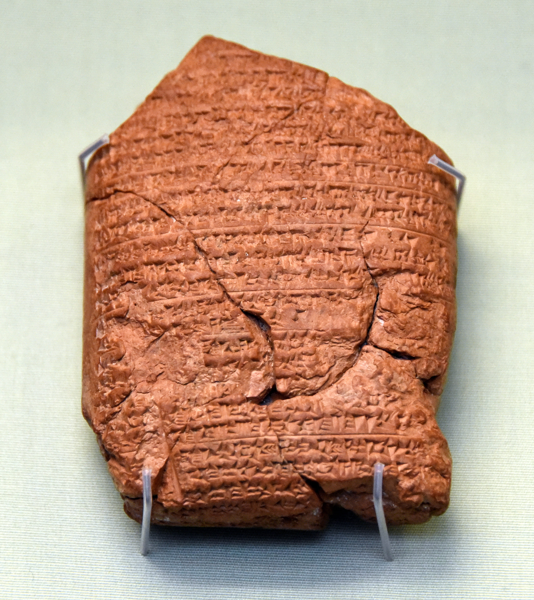
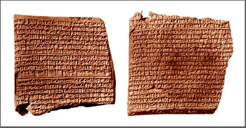
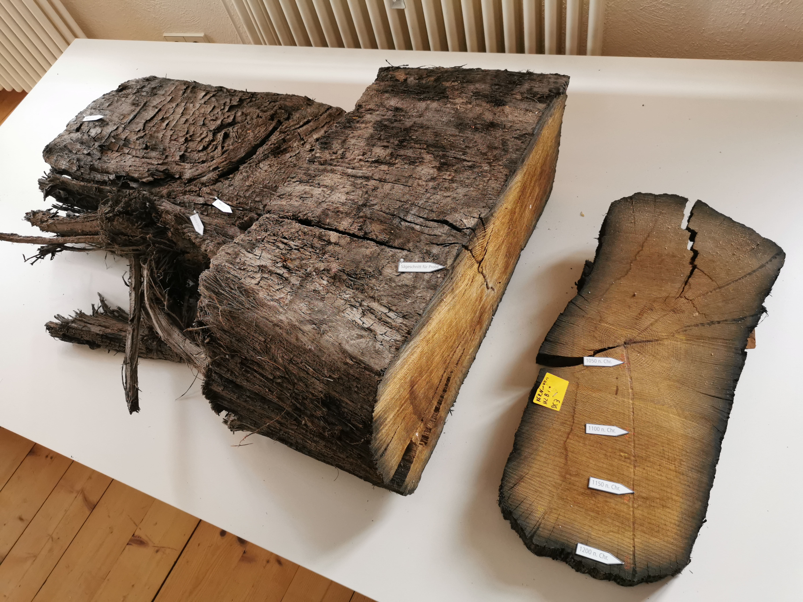
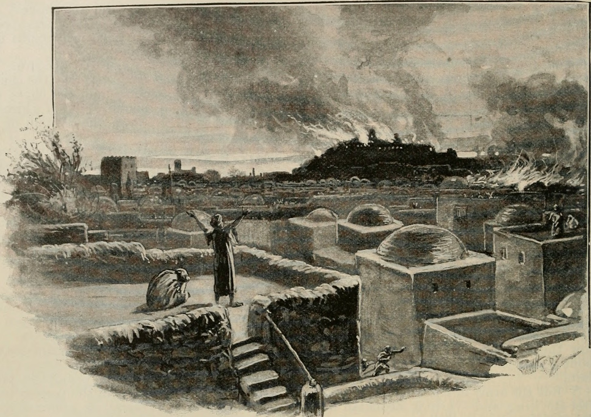

Una sola pregunta. Dos testigos independientes —las crónicas de Babilonia y el cielo nocturno del siglo VI a.C.—. Y un método que ancla el pasado entero. Cómo la ciencia fija una fecha con precisión de reloj.
¿En qué año destruyó Babilonia el Templo de Jerusalén? Durante siglos la respuesta pareció inalcanzable con precisión. Hoy, la historia la fija en un año concreto: 587 a.C. (algunos cómputos dicen 586, por un detalle de calendario que veremos). No es una estimación aproximada ni una tradición heredada: es el resultado de cruzar documentos antiguos con astronomía moderna.
Esta edición especial no es un artículo más. Es la reconstrucción de cómo se sabe una fecha del mundo antiguo: qué pruebas la sostienen, cómo encajan entre sí, y por qué los especialistas la consideran uno de los anclajes más firmes de toda la cronología del Cercano Oriente. Vamos a seguir la evidencia, pieza por pieza.
Sabemos que Babilonia destruyó Jerusalén. La cuestión es cuándo, con exactitud. La respuesta —587 a.C.— no viene de una sola fuente, sino de varias que se confirman entre sí. Esta pieza muestra cómo.
¿Por qué importa tanto una fecha? Porque una fecha firme es un ancla. De ella cuelgan otras: el destierro a Babilonia, el regreso, la cronología de los reyes de Judá. Fijar bien un punto permite ordenar todo lo demás. Y porque el modo en que se fija revela algo hermoso: que el pasado, aunque mudo, deja pistas que se pueden leer con rigor.
El imperio neobabilónico tenía escribas que registraban, año por año, los hechos del reinado: campañas, batallas, sucesiones. Son las llamadas Crónicas babilónicas, tablillas de arcilla escritas en cuneiforme. A diferencia de las inscripciones reales, que exageran las glorias del rey, las crónicas son secas, administrativas —lo que las hace especialmente fiables como fuente histórica—.

Una de estas tablillas, conocida como la Crónica de Jerusalén (ABC 5), registra con fecha precisa el primer asedio de la ciudad: el segundo día del mes de Adar del séptimo año de Nabucodonosor, cuando capturó Jerusalén y depuso al rey Joaquín. Eso corresponde a marzo del 597 a.C. La crónica ancla el reinado de Nabucodonosor en el calendario.
Ahora bien, seamos precisos, porque el rigor lo exige: la tablilla que narraría la destrucción del Templo, diez años después, no se conserva —el tramo de las crónicas que cubre esos años se ha perdido—. Lo que las crónicas nos dan es el marco firme del reinado y la fecha del primer asedio. Para clavar el año exacto de la destrucción necesitamos un segundo testigo, y es aún más asombroso que el primero.
Los babilonios eran astrónomos meticulosos. Anotaban en tablillas las posiciones de la Luna y los planetas noche tras noche: los llamados diarios astronómicos. Y aquí ocurre algo extraordinario. Una de esas tablillas, catalogada como VAT 4956, empieza con estas palabras: "Año 37 de Nabucodonosor, rey de Babilonia". Y a continuación describe decenas de posiciones exactas de la Luna y los planetas a lo largo de ese año, incluido un eclipse.

¿Por qué es esto una máquina del tiempo? Porque las posiciones de los planetas nunca se repiten igual. La combinación exacta de dónde estaban la Luna, Saturno, Júpiter y los demás en un conjunto de noches concretas ocurre una sola vez en muchos siglos. La astronomía moderna puede "rebobinar" el cielo y calcular en qué año se dieron esas posiciones. Y el resultado es inequívoco: el año 37 de Nabucodonosor fue el 568 a.C.
El cielo de cada año es único, como una huella dactilar. La tablilla anotó el cielo del año 37 del rey. Al identificar ese cielo con la astronomía, sabemos que fue el 568 a.C. Y contando hacia atrás, su año 18 —cuando cayó Jerusalén— fue el 587 a.C.
La aritmética es simple una vez fijado el ancla. Si el año 37 fue 568 a.C., el año 18 del mismo reinado —aquel en que Nabucodonosor destruyó Jerusalén— cae en 587 a.C. No es una suposición: es el cielo mismo, registrado por un escriba hace 2.500 años, quien lo dice.
Distintos caminos, tomados por separado, apuntan al mismo año. Desplázate para ver cómo cada línea de evidencia cae sobre el mismo punto del tiempo.
Fijan el reinado de Nabucodonosor y la fecha del primer asedio (597 a.C.). Anclan el marco.
El cielo del año 37 = 568 a.C. Contando atrás, el año 18 (la destrucción) = 587 a.C.
Dendrocronología y radiocarbono anclan la cronología del mundo antiguo y respaldan el marco entero.
Tres métodos independientes, ningún acuerdo previo entre ellos, y un mismo resultado: 587/586 a.C. Cuando pruebas que no se hablan entre sí coinciden, la conclusión es sólida.
Las crónicas y la astronomía fijan el 587. Pero, ¿cómo sabemos que toda la cronología del mundo antiguo —el andamiaje sobre el que se apoya esa fecha— es firme? Aquí entra un tercer aliado, que no fecha directamente la caída de Jerusalén, pero garantiza que el edificio entero se sostiene: la dendrocronología, la datación por los anillos de crecimiento de los árboles.

Cada árbol añade un anillo por año, y su grosor depende del clima. Años buenos, anillos anchos; años secos, anillos finos. Esos patrones se repiten en todos los árboles de una región, y superponiendo maderas cada vez más antiguas se construye una secuencia continua que se remonta miles de años. Combinada con el radiocarbono, la dendrocronología ha permitido anclar en el calendario tramos enteros de la historia del Cercano Oriente que antes flotaban con siglos de incertidumbre.
Para nuestra fecha, su papel es de respaldo estructural: no señala el 587 con el dedo, pero confirma que la cronología general en la que ese 587 se inserta es correcta. Es la diferencia entre un testigo del hecho concreto y el ingeniero que certifica que todo el puente aguanta. Con las tres piezas juntas —crónicas, cielo y método de datación— la fecha deja de ser una hipótesis y se vuelve un hecho establecido.
Lectura: la datación de la caída de Jerusalén en 587/586 a.C. es consenso académico casi unánime. Se apoya en la cronología babilónica, en la astronomía de VAT 4956 y en el marco de datación absoluta. Es uno de los anclajes más firmes de la historia antigua.
Existe una cronología alternativa que sitúa la destrucción de Jerusalén en el 607 a.C., veinte años antes. Conviene explicarla con objetividad, porque forma parte honesta del panorama.
La fecha del 607 a.C. no surge de la evidencia arqueológica o astronómica, sino de una interpretación de ciertos textos que cuentan setenta años de destierro de una manera concreta. Para llegar al 607 hay que desplazar veinte años toda la cronología del reinado de Nabucodonosor, lo que choca frontalmente con las crónicas babilónicas y, sobre todo, con las observaciones astronómicas de VAT 4956.
Quienes defienden el 607 argumentan que las posiciones lunares de la tablilla encajarían también veinte años antes. Pero el análisis detallado muestra que el conjunto completo de observaciones —las planetarias además de las lunares— solo cuadra con el 568 a.C. para el año 37. Reinterpretar una parte ignorando el resto no resiste el examen. Por eso la práctica totalidad de los especialistas —asiriólogos y astrónomos, con independencia de su religión— sostiene el 587/586.
Esta edición no entra en la disputa doctrinal que rodea a esa fecha alternativa: se limita a constatar, con neutralidad, que la evidencia disponible respalda el 587/586 y que la cronología del 607 no encuentra apoyo en el registro histórico ni astronómico.
La caída de Jerusalén, en 587/586 a.C., no es una creencia: es una de las fechas mejor establecidas del mundo antiguo. Y el modo en que la conocemos —cruzando arcilla, planetas y anillos de árboles— es, en sí mismo, una de las mejores historias que la ciencia puede contar sobre el pasado.

La Crónica de Jerusalén (ABC 5, BM 21946) fue publicada por D. J. Wiseman (Chronicles of Chaldaean Kings, 1956) y fecha el primer asedio en Adar del año 7 de Nabucodonosor (marzo del 597 a.C.). El tramo de las crónicas que cubriría la destrucción del 587 no se conserva, hecho que esta pieza no oculta.
La datación de VAT 4956 en 568/567 a.C. para el año 37 de Nabucodonosor procede del trabajo de los asiriólogos Abraham Sachs y Hermann Hunger (Astronomical Diaries and Related Texts from Babylonia, 1988), basado en el conjunto de observaciones lunares y planetarias. De ahí se deriva el año 18 (destrucción) = 587 a.C.
El papel de la dendrocronología y el radiocarbono en el anclaje de la cronología absoluta del Próximo Oriente se apoya en trabajos como los de Sturt Manning y el Cornell Tree-Ring Laboratory. Su función aquí es de respaldo del marco cronológico general, no de datación directa del 587.
Sobre la fecha alternativa del 607 a.C.: es sostenida principalmente por motivos confesionales y ha sido examinada y refutada en detalle por la crítica académica (por ejemplo, los análisis de C. O. Jonsson y otros). Esta pieza la expone con neutralidad y sin entrar en polémica religiosa, fiel al enfoque histórico-crítico del blog: describir la evidencia, no juzgar creencias.